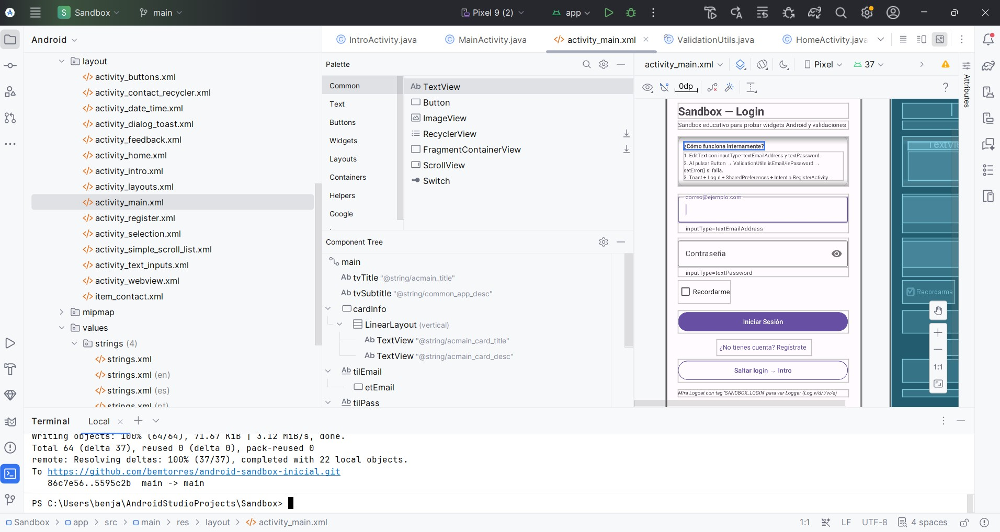

Android Sandbox Tutorial
Proyecto multi-Activity en Java 11 diseñado para dominar cada componente de UI, ciclo de vida, validación desacoplada y localización multi-idioma (es/en/pt) de forma 100% modular.
Home Hub Preview
assets/images/home-hub.jpg

🔄 Ciclo de vida de Activity
Si estás estudiando Android Activity, onCreate() es solo una parte del ciclo.
Estos son los métodos principales que debes conocer — el orden normal es onCreate → onStart → onResume → [usable] → onPause → onStop → onDestroy.
@Override
protected void onCreate(Bundle savedInstanceState) {
super.onCreate(savedInstanceState);
}
@Override
protected void onStart() {
super.onStart();
}
@Override
protected void onResume() {
super.onResume();
}
@Override
protected void onPause() {
super.onPause();
}
@Override
protected void onStop() {
super.onStop();
}
@Override
protected void onDestroy() {
super.onDestroy();
}Orden normal
onCreate()
↓
onStart()
↓
onResume()
↓
[ACTIVITY USABLE]
↓
onPause()
↓
onStop()
↓
onDestroy()| Método | ¿Cuándo ocurre? | Uso típico |
|---|---|---|
| onCreate() | Se crea la Activity | Inicializar UI, variables, listeners |
| onStart() | Empieza a ser visible | Preparar recursos visuales |
| onResume() | Usuario puede interactuar | Cámara, sensores, iniciar procesos |
| onPause() | Pierde el foco | Pausar, guardar cambios rápidos |
| onStop() | Ya no es visible | Liberar recursos |
| onDestroy() | Se destruye | Limpieza final |
| onRestart() | Vuelve tras onStop() | Preparar nuevamente |
Ejemplo completo con logs — Java y Kotlin
public class MainActivity extends AppCompatActivity {
@Override protected void onCreate(Bundle savedInstanceState) {
super.onCreate(savedInstanceState);
setContentView(R.layout.activity_main);
Log.d("CICLO", "onCreate");
}
@Override protected void onStart() { super.onStart(); Log.d("CICLO", "onStart"); }
@Override protected void onResume() { super.onResume(); Log.d("CICLO", "onResume"); }
@Override protected void onPause() { super.onPause(); Log.d("CICLO", "onPause"); }
@Override protected void onStop() { super.onStop(); Log.d("CICLO", "onStop"); }
@Override protected void onRestart() { super.onRestart(); Log.d("CICLO", "onRestart"); }
@Override protected void onDestroy() { super.onDestroy(); Log.d("CICLO", "onDestroy"); }
}class MainActivity : AppCompatActivity() {
override fun onCreate(savedInstanceState: Bundle?) {
super.onCreate(savedInstanceState)
setContentView(R.layout.activity_main)
Log.d("CICLO", "onCreate")
}
override fun onStart() { super.onStart(); Log.d("CICLO", "onStart") }
override fun onResume() { super.onResume(); Log.d("CICLO", "onResume") }
override fun onPause() { super.onPause(); Log.d("CICLO", "onPause") }
override fun onStop() { super.onStop(); Log.d("CICLO", "onStop") }
override fun onRestart() { super.onRestart(); Log.d("CICLO", "onRestart") }
override fun onDestroy() { super.onDestroy(); Log.d("CICLO", "onDestroy") }
}⭐ Los más importantes para aprender primero
1. onCreate → construir · 2. onStart → visible · 3. onResume → interactuando · 4. onPause → pierde foco · 5. onStop → no visible · 6. onDestroy → destruida · 7. onRestart → vuelve desde onStop().
Otros: onBackPressed / OnBackInvokedDispatcher, onSaveInstanceState(), onRestoreInstanceState(), onNewIntent().
Dependencias añadidas para mejor diseño
Declaradas en gradle/libs.versions.toml y usadas en app/build.gradle. Sin ellas no hay Material 3, ni layouts modernos, ni listas eficientes.
dependencies {
implementation libs.activity.ktx // 1.8.0
implementation libs.appcompat // 1.6.1
implementation libs.constraintlayout // 2.1.4
implementation libs.material // 1.10.0
implementation libs.recyclerview // 1.3.2
testImplementation libs.junit // 4.13.2
androidTestImplementation libs.espresso.core // 3.5.1
androidTestImplementation libs.ext.junit // 1.1.5
}implementation libs.activity.ktx — 1.8.0
Para qué: EdgeToEdge.enable(this) + insets. Sin ella el contenido queda detrás de la status bar y el teclado tapa los
TextInputLayout. Mejora diseño inmersivo.
implementation libs.appcompat — 1.6.1
Para qué: Base AppCompatActivity + compatibilidad hacia atrás (API 27+). Sin ella no hay
Theme.Material3.DayNight estable.
implementation libs.constraintlayout — 2.1.4
Para qué: Layouts planos sin anidación (lab 8). Reemplaza LinearLayout anidados, reduce jerarquía y mejora
rendimiento.
implementation libs.material — 1.10.0
Para qué: Clave de diseño: TextInputLayout, MaterialButton,
MaterialCardView, Chip, SwitchMaterial. Sin ella todo sería gris Holo.
implementation libs.recyclerview — 1.3.2 Añadida por ti
Para qué: Lab 10 Contactos. RecyclerView + ViewHolder recicla vistas → 1000 contactos fluidos. Con
ScrollView todo queda en memoria y hace lag.
testImplementation libs.junit — 4.13.2
Para qué: Tests unitarios de ValidationUtils (isEmail, isPhone) sin emulador.
androidTestImplementation libs.espresso.core — 3.5.1 + libs.ext.junit — 1.1.5
Para qué: Tests instrumentados: Espresso simula clicks en Button/Chip y valida Toast +
ext.junit como runner.
¿Qué pasa si quitas alguna?
Sin material → pierdes todo el diseño. Sin constraintlayout → layouts anidados lentos. Sin recyclerview → Lab
10 no compila (ClassNotFoundException). Sin activity.ktx → no hay EdgeToEdge.
Definidas en gradle/libs.versions.toml ([versions] + [libraries]) y referenciadas con
alias(libs.plugins.android.application). Cambia versión ahí y todo el proyecto la usa.
Material Components for Android (MDC-Android)
Material Components for Android (MDC-Android) —el paquete oficial bajo el espacio de nombres com.google.android.material— es la implementación oficial creada por Google para
llevar el sistema de diseño Material Design a Android. Reemplazó a las antiguas bibliotecas de soporte (android.support.design) cuando el ecosistema migró a AndroidX.
¿Qué hizo exactamente esta biblioteca?
Estandarizó los componentes de interfaz
Antes de Material Components, crear elementos comunes como hojas inferiores deslizables (Bottom Sheets), barras de navegación inferior (Bottom Navigation) o botones
flotantes (FAB) requería programarlos desde cero con hacks de vistas, usar librerías de terceros o lidiar con inconsistencias de compatibilidad. MDC empaquetó todo esto en
componentes oficiales listos para usar (MaterialCardView, MaterialButton, TextInputLayout, BottomNavigationView, etc.).
Resolvió la fragmentación visual entre versiones
En los componentes base nativos de Android (android.widget.*), un botón o un campo de texto se veía completamente distinto
según la versión del sistema operativo del dispositivo (un Android 5 no se veía igual que un Android 10). com.google.android.material desacopló la UI del firmware del dispositivo, garantizando que tu diseño se renderice de manera
idéntica y moderna en prácticamente cualquier versión compatible.
Introdujo un sistema de temas unificado (Theming)
Permitió gestionar la identidad visual desde un solo lugar a través de tres subsistemas clave:
- • Color: Soporte nativo para paletas semánticas, modo oscuro automático y, en versiones recientes (Material You / M3), colores dinámicos extraídos del fondo de pantalla del usuario.
- • Tipografía: Escalas tipográficas coherentes que se adaptan al diseño responsivo.
-
•
Forma (Shape): Control centralizado de bordes redondeados, esquinas cortadas o curvas en toda la app sin tener que crear docenas de archivos
shape.xml.
Accesibilidad y microinteracciones integradas
Incluyó de fábrica los efectos de ondulación (ripple effects), elevación con sombras reales calculadas según el eje Z, animaciones de transición fluidas y compatibilidad estándar con lectores de pantalla (TalkBack).
¿Por qué es mejor para trabajar en Android Studio?
| Aspecto | android.widget.* (Clásico) | com.google.android.material.* (MDC) |
|---|---|---|
| Diseño visual | Apariencia anticuada o atada a la versión de Android del teléfono. | Estética moderna de Material Design (Material 3) consistente. |
| Estilos de campos de texto | EditText básico; requiere dibujar fondos XML para bordes. |
TextInputLayout con soporte nativo para etiquetas flotantes, estados de
error, iconos de contraseña y contornos redondeados. |
| Gestión de temas | Estilos dispersos y difíciles de mantener globalmente. | Definición centralizada en themes.xml que propaga colores y esquinas a
todos los componentes. |
| Soporte en Android Studio | Básico. | Integración completa en el Layout Editor visual, previsualización exacta y autocompletado inteligente de atributos
app:*. |
| Compatibilidad | Dependiente de las APIs del sistema en tiempo de ejecución. | Compatible hacia atrás a través de la suite de AndroidX. |
Ejemplo práctico: Button vs MaterialButton
Con un botón tradicional de Android (android.widget.Button), agregar esquinas redondeadas, un borde de color y un icono al lado
del texto requería crear un archivo XML en res/drawable como selector de fondo.
Con MaterialButton, se resuelve directamente mediante atributos XML limpios y reutilizables:
<com.google.android.material.button.MaterialButton
android:id="@+id/btnGuardar"
android:layout_width="wrap_content"
android:layout_height="wrap_content"
android:text="Guardar"
app:icon="@drawable/ic_save"
app:cornerRadius="12dp"
app:strokeColor="?attr/colorPrimary"
app:strokeWidth="2dp" />Nota sobre el desarrollo actual en Android
Si trabajas con vistas tradicionales en XML, com.google.android.material sigue siendo la
base obligatoria y recomendada por Google. Si estás construyendo interfaces declarativas modernas con Jetpack Compose, el equivalente directo es la librería androidx.compose.material3.
Strings & Localización
187 keys externalizadas sin textos quemados en Java/XML, soporte de 3 idiomas (es/en/pt) y convención common_ / acXXXX_.
Navegación & Intents
Paso de parámetros con putExtra, persistencia liviana con SharedPreferences y retorno de
resultados.
Catálogo de Labs
Módulo 1 (Conoce Android: 10 labs de UI/Vistas) y Módulo 2 (Funcionalidades Especiales: Concurrencia y Sensores).
Mapa de Flujo Core del Sandbox
Activities
12
Totalmente desacopladas
Layouts XML
11
Constraint & Scroll/Linear
Strings
187 × 3
Español, Inglés y Portugués
Target SDK
Android 37
Material 3 DayNight